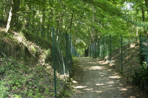

I was looking through some after action reports from the U.S. military groups that entered the Minden, Porta Westfalica area in early April 1945. The reports come from 5ad.org, an unofficial site dedicated to the 5th Armored Division in WW2, and the Combined Arms Research Digital Library (http://cgsc.contentdm.oclc.org/cdm/landingpage/collection/p4013coll8). The best find so far was the map showing the path of the 5th Armored Division as they swept through Germany.
I was hoping to get information about the discovery of the underground factories, but the detail, so far, has been at a much higher level… this company moved here at this hour, and this company here, etc.
It was interesting to mentally plot the course of these military groups as they approached and left the area I was interested in. For the most part, I could just type the town’s name into Google Maps to pull up the location, but I noticed what seemed like coordinates listed sometimes as well.
That got me curious to see if there was a way to locate these coordinate points. I searched Google for “ww2 german map coordinates” which led me to this post (http://forum.axishistory.com/viewtopic.php?t=158724) at the the forums at axishistory.com, which led me to this site (http://www.echodelta.net/mbs/eng-welcome.php) that converts old ww2 coordinates to locations in Google Maps.
The system in use at the time uses a grid over northern Europe with a letter pair to distinguish each grid square. Within that square, a set of numbers determine the kilometers on the x and y axis to travel to reach the correct point. I had to guess which grid was used, since the coordinates were just numbers. It worked out well.
I presented the following at the Association of American Geographers Annual meeting on April 21, 2015. I titled the presentation, “Placing Space in the Experiences of Forced Laborers at Porta Westfalica”
What follows is the paper with the images I used in the presentation. This will turn into the presentation I’ll give in Porta Westfalica on May 8, and a journal article this summer, and eventually a chapter of the dissertation.
==========
Location is important for human interaction and growth development. Being able to place ourselves in a location and being able to recall the location of things and events is also critical for our ability to remember. As one psychologist put it, “memory for location is a fundamental aspect of human functioning. Without the ability to remember locations, children and adults would be unable to carry out even basic tasks, such as getting ready for school or preparing a meal.”[1] Indeed, it seems the visual aspect of remembering is integral for recalling memories made with sight. Studies have shown that a person’s memories are affected when they lose their vision, eventually leading to losing memories, “even well-rehearsed and well-consolidated childhood memories, are lost because the relevant visual information, which is a key part of the memory information, is lost.”[2] When vision is lost, the memories made with that vision erode until they are forgotten completely. New memories can and are made, but without the visual component.
Events and experiences are more accurately remembered, and remembered with more detail, when influenced by strong emotional stimulations (such as during traumatic and stressful events). More so, such memories are strengthened by and even depend upon the visual component. During highly traumatic or stressful events the visual awareness is sharpened, hence ones surroundings, ones location and spatial awareness, become more important. Remembering the place helps us remember the event. This is arguably the case for why many holocaust survivors recall so vividly, and invariably include in their autobiographical accounts, the place names of where traumatic events happened.
Often, survivors put great emphasis on recalling with the place where seemingly unimportant events happened, like which town they travelled through on the way to a prison camp. Zsuzsa Farago a 24 year old female Jew from Hungary, for example, could not remember the date when she left Auschwitz for a labor camp, but she did remember several details about the location. “I don’t remember exactly anymore, I believe that we were transferred sometime in the Fall. We were taken to Reichenbach. There was a telephone factory there. I believe that belongs to Czechoslovakia today, then there were Germans. Far away from the city there was a camp, and that’s where we were. And we worked in the factory there.” Specific time aspects seem to fade quicker than spatial aspects of memories.
At other times, the survivor’s grasp of the time was just as acute as their location. Eva Gescheid, a 20 year old female Jew from Hungary, described her journey to Auschwitz and later to Porta Westfalica with such detail. “We travelled for four days and nights, unspeakable suffering, because there were 70-80 people transported in closed cattle-cars. There was absolutely no water. After four days we came to Auschwitz… It was March, rain and snow showers raged. We possessed only one blanket each, which provided only a little protection. Six days and nights we traveled and suffered the torments of hell. Finally we reached Porta. We were unloaded and again left without food; this for two whole days.”
Before I even had the data, I wanted to do some kind of spatial analysis. That’s like buying a car just for the experience of changing a tire, or more accurately, putting the proverbial cart before the horse. Nevertheless, I was certain that there was some spatial context to analyze, for everything happens somewhere, and looking at the somewhere can help us understand more about the events. I also had a tendency to focus too much on the tools and methodology, so it was important to remember that the spatial plotting tools and the data points were not the analysis, but only tools used to analyze.
The first step in gathering data was to determine the scope. With hopes of finding plentiful events, the scope was narrowed to focus only on the time that a survivor was encamped at one of the Porta Westfalica labor camps, Barkhausen, Lerbeck or Hausberge, and their accompanying work site. As I began to assemble the data, looking at the interviews and deciding what elements to track, I began to ask questions that I was hoping the data would be able to answer. Some initial questions I had were: Were there more bad memories than good? Or, given the circumstances, were there any good memories? In terms of percentage, which gender had more or less than the other of good or bad experiences? What were the age ranges of the prisoners? Where were the majority of the inmates deported to? Where does most of the violence and death happen?
The final question seemed to have the most potential of being answered once I started going through the data to pull out events. I was also able to find that there were indeed good experiences had in the concentration camp. Only after I gathered the data and began to try different ways of graphing and mapping the data did more questions arise. Most surprising were the number of gender based questions that arose from looking at the data. Some of these questions included the following: Which prisoner had the greatest number of events? Since the number of male and female interviews were comparable (6 female and 8 male), which gender had the greater number of events and why? Was one gender apt to have more experiences with certain events than the other?
Other location-based questions arose as well. Although seemingly obvious, where did the majority of work related, violence, and death events happen? Which location had the most events? I was also interested in seeing what patterns or information stood out that was not anticipated.
The data points come from an original pool of 25 transcripts of interviews or other written accounts by survivors predominantly taken during the 1990s. Only 14 ended up having events that could be used in this study. While most of the accounts contained plenty of spatial references, only 14 had such references while recounting their time at the Porta Westfalica camps. Females accounted for 6 and males for 8 of the accounts used in this study. A total of 90 events were found in the 14 accounts.
Number of events recorded by gender.
I was hoping the accounts would be replete with retellings of events and graphic descriptions of the locations where they happened. It would have been great if the survivors were able to describe in detail where they were standing at any given point and had a plethora of events to recount. In reality, the events were much more general and quite vague. Instead of someone describing where exactly in the camp or tunnel they were standing when an event of violence happened, the event was reported more generally; an act of violence happened. For example Tadeusz Kaminski, an 18 year old Polish prisoner in Lerbeck reported that “the camp elder was a German, a sadist without any feeling. Even early in the morning before roll call he would beat the prisoners without mercy. He had a riding crop always with him and would beat as the feeling came.” No specific location is given, just that violence would happen.
A number of limitations of the data should be addressed. First is the limited number of accounts used in the study. Fourteen is admittedly a small number compared to the 2,970 prisoners at the three camps, and therefore all interpretations and conclusions are given in light of a decided lack of representation. Nevertheless, the results that do come from the limited data are instructional and can, arguably, be reflective of the larger number of experiences at the camps.
Second, a number of the accounts were taken from legal depositions or questionnaires where the intent was to show the brutality and inhumanity suffered at the camp. While these accounts may have a tendency to skew the resulting events towards the violent and negative, it can rightly be argued that due to the nature of the camps the overwhelming experiences would be that of violence, death and work.
Third, in some cases I may have been more general and forgiving as to what constituted an event than I was for other accounts. This was not a conscious choice, but is rather an acknowledgement of human error.
Limiting the events to their time in Porta Westfalica severely truncated the experiences of the survivors. Generally, only a third or less of the entire account was about the survivor’s time in the Porta Westfalica camp.
Lastly, the locations of the events were not specific enough to generate a unique latitude and longitude coordinate. Locations were given one of five sets of coordinates that correspond to the Barkhausen camp (as the barracks, sickbay, roll call and bathroom), the tunnel entrance on Jakobsberg (as the worksite for Barkhausen), Lerbeck (which contained all locations), the approximate location of the Hausberge camp (as the barracks, sickbay, roll call and bathroom locations), and the top of the Jakobsberg as the worksite for Hausberge.
I began the process of recording events by making a list of locations and events that I thought would show up in the accounts. My initial list of locations included bathroom, barrack, roll call, worksite, and sickbay; and events like food, work, sleep, life, hygiene, violence, good, death, and sick. The final list of locations and events did not change much. In most cases, determining an event was pretty straightforward. For example, Eva Gescheid frankly described, “we possessed no shoes.” That describes an aspect of life, so easily fits in the life event. The location is less clear. If this is to mean that they had no shoes at all, period, their whole time in the Hausberge camp and adjacent worksite under the mountain, then this event could apply to all locations. In the instances of avocation, food, life and sleep events, I placed all of these in the ‘barracks’ location.
Sometimes the event and location are clear, as is the description of a death retold by Anton Daniel Cornelis van Eijk, a Danish prisoner of war at Lerbeck. “I sat in Lerbeck for six months, and in these six months, so far as I know, two people died.” He then recounts the story of a young Polish man, 28-30 yrs old, who was hanged because he called a camp elder (Lagerältester) a communist. A few prisoners, perhaps Russians, helped with the hanging. Apparently he was not completely dead when they finished, so he was taken to the sick bay where he was given an injection of gasoline which caused him to die. Here both the location and the event are known.
Survivors by age and gender.
In looking at the data, a number of interesting patterns arise, answering many of our questions from above regarding gender. As noted, only 14 interview accounts out of 24 held information that made it into the study. Again, that’s not to say that the other account did not hold important and interesting data, but they did not recount any experiences that related to Porta Westfalica specifically. The number of interviews ended up being pretty evenly split with six female accounts and eight male accounts. This is rather interesting as there were nearly twice as many male prisoners (1,970) as there were female (1,000). Unexpectedly, the number of accounts from the Barkhausen camp (4) is equal to the number from Lerbeck (also 4). With nearly three times as many inmates at Barkhausen (1,300) as at Lerbeck (500), one would think more accounts would come from Barkhausen. Again this points to the limitations of the study, in that a proportionally representative number of accounts from Barkhausen were not available. The average age of the survivors at the time of internment was 25.5 years of age. Two survivors, Dmitrij Iwanowitsch Zwagorskij and Pierre Lecomte did not have enough data to determine their age at the time.
Total pages by survivor.
The total number of pages in each survivor’s account is also telling. Males totaled 229 pages of accounts, while females totaled 181 pages. Each survivor averaged 30 pages of interview transcript, although that number is a bit misleading. Only three individuals actually surpassed 30 pages of interview, three women and one man. Vincent Lind, a 20 year old political prisoner from Denmark, accounts for half of the men’s page count at 161, and by far the most pages of any survivor in the study. Zsusza D Fargo and Györgyné Zsuzsa Polgar Papp, both 24 year old Jewish women from Hungary, had 62 and 60 pages respectively, and Klari Sztehlo Neumann, a 23 year old Jewish woman from Hungary was the final survivor over the average with 38 pages.
Number of events recorded by survivor.
Comparing total page count with the number of events in the study is also enlightening and somewhat counter intuitive. While Vincent Lind and Zsuzsa D. Farago do indeed have the most number of events represented in the study, Zsuzsa Papp, who had the second most total number of pages, only provided one event to the study. Likewise, Axel Christian Hansen, a 44 year old political prisoner from Denmark, and Anton Daniel Cornelis van Eijk, a 41 year old prisoner of war from Denmark, each contributed 14 and 13 events respectively, while only having 10 and 6 pages of account respectively. This simply shows that the number of pages in the account do not necessarily predict the number of events reported.
Number of events by type of event.
Looking at the events related by gender also uncovers an interesting dichotomy. While males had at least one record in each event, the female accounts mainly centered around three events: work, life and good experiences.
According to the few accounts available, women spoke predominantly about life in the camp, talked about the work they were forced to accomplish, and related a few good experiences. Interestingly, life experiences only had one less than work experiences, 9 and 10 respectively. This seems to indicate the women were more focused on the work and living conditions while at Porta Westfalica. For the women, only one instance of violence was recorded.
As anticipated, men focused their accounts mainly on work and violent experiences, followed by good and life experiences. Also as expected, 51 events—over half the total number of events—speak of negative experiences, with surprising 11 instances of good events happening. Surprisingly, there were not as many accounts of death as expected. With a higher percentage rate of deaths than the parent camp of Neuengamme, I expected there to be more death events in the accounts than was represented. Vincent Lind and Anton Daniel Cornelis van Eijk provide the only male accounts of death, and Klari Sztehlo Neumann and Zsuzsa Farago provide the two accounts of female death in the Hausberge camp.
Number of events.
Turning to spatial representations of the data show an equal number of interesting patterns. Work events are the most numerous (26), followed by violence and life events (16 each), good experiences (11), and a surprisingly small number of death events (6). Not surprisingly, at the three labor camps, work events are the most numerous.
Number of events by location.
Placing these events where they happened provides more insight. As one might expect, most of the work events happened at the work location. Two exceptions are more related to placing events that are really roll call experiences, rather than work experiences in the the work event category due to lack of a roll call event category.
One of the main questions I had was where did the violence happen. I speculated that most violence occurred near the camp rather than at the work site, in that the SS guards would rather their prisoners work and therefore refrain from violent actions. This assumption assumes that most violent actions came from prisoner guards, but in actuality, violence most often came from fellow prisoners, specifically those with some position like the Lagerältester. Indeed, all seven accounts of violence in the work place came from fellow prisoners. Only two cases of violence at the barracks where perpetrated by camp guards. All three violent events during roll call were carried out by SS guards.
An almost equal number of good experiences as violent experiences at the worksite, and to a lesser extent the barracks. The surprising number of good experiences come from three individuals, some describing the beauty of the landscape, some describing positive interactions with other inmates or civilian laborers, or even a positive interaction with a Gestapo officer.
Perhaps obvious, only negative events happened in the sickbay; three deaths, and one each of violence, sick and bad.
The barracks had the most number of different events, most likely allowing to the barracks being the only other place rather than the worksite where the inmates were allowed to go. At the work site, as seen in the graphs, was mostly concentrated on working. The barracks allowed for a larger variety of action.
Number of events at places.
Looking at the different camps also shows patterns. Lerbeck had almost double the number of violence than either Barkhausen or Porta Westfalica (worksite), possibly because Lerbeck included living and working conditions, but had less than half as many accounts of work than the work site at Jakobsberg.
Attempts were made at mapping the various events and the location, but due to the small number of locations, the maps do not reveal much more than the graphs.
A further spatial study arose while reading through the interview accounts. Central to all remembrances was the complete circle the survivors made in terms of their journey; from initial confinement to internment and transportation to various camps, and the journey back home. The next spatial project will use Omeka and Neatline to create an interactive journey of several survivors. As the narrative of the journey is told, the locations will be displayed on the map, and visitors will be able to follow along on the map as well as with the narrative.
The project will be hosted at http://nazitunnels.org
One final thought and caution to keep in mind when doing spatial projects with such sensitive and emotional data is that plotting and graphing the data can abstract the humanity from the survivors, as they become dots on a map rather than people. Care must be taken to keep the humanity in these spatial humanities studies.
One way to do that is to always reference the names and use examples of their experiences.
[1] Jodie M. Plumert and Alycia M. Hund, “The Development of Memory for Location: What Role Do Spatial Prototypes Play?,” Child Development 72, no. 2 (March 1, 2001): 370–84, 370.
[2] David C. Rubin, “A Basic-Systems Approach to Autobiographical Memory,” Current Directions in Psychological Science 14, no. 2 (April 1, 2005): 79-83, 80.
Here’s an interesting history I ran across in my research. It’s a little bit of situational irony, something that happens to everyone. This woman was able to notice it and find humor in it later in life despite all of the tragedy. This event is juxtaposed with another event that shows how interesting humanity can be. Even though she had just survived months of the most brutal displays of humanity in the concentration camps, she was able to show compassion to her “enemy”.
Györgyné (Zsuzsa) Papp was born in Budapest, Hungary in 1921. Her family was Jewish, but not religiously. She was arrested and sent to Auschwitz. Later she was selected to go to a labor camp. She ended up being transferred to several labor camps and ended up in Salzwedel.
One morning she woke up and all of her captors were gone. It was April 1945. The Americans were advancing quickly, so the German soldiers had fled. Zsuzsa and her sister went into the town of Salzwedel to search for food. The town was nearly deserted as well. They went into stores already looted by other prisoners. Then entered homes to find any food they could. In one home they found a loaf of bread on the table. As they went to get it they heard sobs from a woman who told them that was all the food she had left for herself and her four children. Even though they were starving and had been abused and mistreated for months by this woman’s nation, they felt pity on her and left the bread.
Zsuzsa tells how one of the things she was most fearful of while in the concentration camps was cleaning the latrines. They were just too awful for her to contemplate. She felt so fortunate to have escaped the dreaded latrine duty in all her months in the concentration camps. As she was walking around Salzwedel she somehow fell into a ditch used for a latrine and found herself covered in waste.
While reading through the survivor accounts that I gathered from the Neuengamme Concentration Camp Memorial last summer, I found a unique report. Apparently at one time either the Danish government, the National Museum in Copenhagen, or the Freedom Museum in Copenhagen put out a survey to former concentration camp inmates.
Axel Christian Hansen was one such inmate. Born in 1899, he was captured in Denmark as a political dissident on September 30, 1944. Sent first to Neuengamme, he was then sent to Porta Westfalica on October 3. His answers are terse, yet convey much; as do the questions left unanswered. Here are a few of the questions and his answers. The survey was conducted in Danish on an unspecified date, and translated into German in 1990.
The first section deals with his transportation from Neuengamme (near Hamburg) to Porta Westfalica.
Type of transportation: Cattle car/ passenger car/automobile/ship – open/closed
How many in each car: 50 men
Was there straw or carpet or other? No
Did you receive any rations during the trip? bread-jam-meat? No
How much?
Did you receive anything to drink? No
How did you relieve yourself? In the corner of the car.
Were there air raids? Yes
Did you stay in the cattle car? Yes
Was it locked? Yes
Where were the guards? In the first car.
Where there any dead or wounded? No
Where there any escape attempts? No
Was there any mistreatment? No
Further comments regarding the transportation and description of exceptional experiences.
There was no time to sleep in the train car because there were too many of us. When we were shipped to Porta, we were given a little bit of water and a little bit to eat from a guard.
The second part deals with the arrival in Porta Westfalica.
What did you have remaining of your things upon arrival? A belt.
Was your face or head shaved? Yes
Was your body shaved? Yes
Where you shaved in another way? Yes, with a reverse mowhawk
How often did you get a reverse mowhawk (Autobahn)? 3 times
When were you allowed to grow your hair? Never
Section three deals with daily life.
How often did you receive a change of clothes (approximate date received)? The prisoner clothes were never changed.
What was exchanged? Shirt and underpants were changed every third week.
Was there any opportunity to wash or receive washed clothing? No
What kind of shoes? Wooden shoes (clogs)
Condition of the shoes? bad
List your other personal belongings (toothbrush, soap, tissue, toilet paper, etc, and how long you had them)
How many roll calls were there per day? about 4-5
When? Mornings, evenings, middle of the night
How long did they normally last? from 1 to 3 hours
How long did the longest last? 3 hours
There is much more to be found in the document. It will be available in the document repository I am building with Omeka, where it can be translated and transcribed by anyone who wants.
Much about the camp life is known because of memoirs of the Danish political prisoners. Following are a couple of books by Danish survivors:
Kieler, Jørgen. Resistance Fighter: A Personal History of the Danish Resistance Movement, 1940-1945. Jerusalem, Israel; Lynbrook, NY: Gefen Publishing House, 2007.
Madsen, Benedicte, and Søren Willert. Survival in the Organization: Gunnar Hjelholt Looks Back at the Concentration Camp from an Organizational Perspective. Aarhus [Denmark]; Oakville, Conn.: Aarhus University Press, 1996.
I recently participated in the annual German Studies Association Conference. (On a side note, my last professor at ASU, Dr. Gerald Kleinfeld started the GSA.)
I was delighted to be on one of two DH panels at the GSA. Since I don’t have anything noteworthy finished or started with my dissertation, I spoke about how the humanities can and should learn from the Open Source community. Specifically, the humanities can learn three things from the Open Source community, more particularly from how the communities that existed to create the Internet and open source software. The three points I talked about in the paper were:
Freedom of information, ability to share and collaborate on research in open and unrestricted ways
Ability to find more sources
Ability to allow a wide range of interested individuals to participate
Here is an HTML version of my presentation (unfortunately I used boring PowerPoint…):
In the spirit of Open Source, I should have posted these much earlier before the conference and let interested individuals make comments, corrections and additions. But, as is all to common with me, I waited until the last minute and didn’t even finish until the day before. Nobody else does that, right? 🙂
All prettied up for the presentation.
The National WWI Memorial.
We get a magnet everywhere we go.
Candy and chocolate shops in the mall.
Kansas City has a Lego Land attraction. The mall next door had these giant mini-figures.
Can’t go to Kansas City without getting some BBQ.
Yummy pulled pork sandwich with fries and a peach pie!
Neat looking Catholic church across from the hotel.
The experience was great. I met some people, got some ideas, learned some things… Most importantly I got some ideas from Paul Jaskot about how to do the “digital aspect” of my dissertation. Details to follow in another post.
One of the uses of Digital Humanities is to enlarge the community of scholars. Building up to a paper at the annual German Studies Association conference in September, I will be researching how the Open Source model of creating software and hardware can be applied to the humanities. Specifically, what does having open access to information and scholarship do to/for/with that information and scholarship. One mantra in Open Source software development is that many eyes on the code spot the errors more quickly. I would like to repurpose that mantra for humanities, specifically history: many eyes make more better history.
To try an experiment, here is a section of chapter one of the dissertation. A quick look at the use of air power as it changed from WWI to WWII and the use of strategic bombing in WWII. Any and all comments on the process, the information, scholarship, history, images, methodology, layout, facts, etc are welcome and acceptable.
STRATEGIC USE OF AIR POWER IN WWI AND WWII
B-24 Liberator in March 1945
By some accounts, the total Allied air offensives during World War II dropped almost two million tons of bombs on Germany, completely destroying over sixty cities, killing an estimated 583,000 Germans as well as 80,000 Allied air crew. [ref]Hansen, Randall. Fire and Fury. Doubleday Canada, Limited, 2009, 279.[/ref] What was the goal of strategic bombing? Did the bombing of British or German cities really have the desired effect? Beginning with their implementation in World War I, airplanes were believed by only a few military leaders at the time to be of any strategic advantage in modern warfare. Incorporating strategic use of airplanes in wartime planning was in itself an early battle fought among US military leaders even before Germany invaded Poland. This section will describe the early use of bombing and how it came to be used strategically in World War II by both Germany and the Allies. Weakening civilian morale and destroying military production facilities were the main goals for both sides of the conflict. This section will look at these two goals, and describe the success or failure of the goals as seen by contemporary observations as well as present-day arguments. Finally, Big Week is discussed as a major turning point in German military planning, effectively cementing the turn from offensive to defensive measures.
Bombing as Strategy
A few British and US airmen saw the advantage of strategic bombing in World War I but were unable to convince Army officers in charge of the war to utilize bombing as an offensive strategy, that is, bombing specific non-battle front targets for the sake of military advantage. For US and British Army commanders in the Great War, the fight was on the ground, between the battling foot soldiers. The airplanes main and only responsibility, according to the commanding officers, was to support those troops. If bombs were to be dropped, they would be at or near the battle’s front. Bombing specific targets, such as military production facilities, was not seen as contributing to winning a war. After the First World War, United States airmen continued to push their belief that strategic bombing could impact a war. Their break came, when air force strategists replied to President Franklin Roosevelt’s general inquiry to the US military in the summer of 1941 for best practices for defeating Axis powers, as they expected and planned for the US entry into the current war in Europe.[ref]Birkey, Douglas A. “Aiming for Strategic Effect: The Evolution of the Army Air Force’s Strategic Bombardment Campaigns of World War II.” Dissertation, Georgetown University, 2013. Georgetown University Library, 7.[/ref]
British Air Chief Marshal Sir Arthur Harris
Britain had also began interwar plans for strategic bombing and beginning with their entrance into war in 1939, British air forces began a systematic bombing of German cities. After the United States entered the war in 1941, they added their air force to the British offensive intensifying the bombing efforts the next year. Bombing raids by the Allies were designed to complete two tasks in hopes of shortening the war: weaken soldier and citizen morale, and destroy German war production. As it played out, strategic bombing of key military locations in the European theater worked as planned, causing German military production great problems.
British Bomber Command under Arthur Harris sought total destruction of industrial areas and their associated civilian support as the main objective. While the press and population saw the bombing of German cities as retribution for bombed British cities, Harris saw it as the way to disarm the German military, city by city if necessary.[ref]Childers, Thomas. “‘Facilis Descensus Averni Est’: The Allied Bombing of Germany and the Issue of German Suffering.” Central European History 38, no. 1 (January 1, 2005): 87.[/ref]
Americans approached the issue of bombing with different goals than the RAF. American air strategists, even between the wars, had long studied the problem of bombing in order to determine the most effective strategy. In studying New York city, for example, they learned that the city could be rendered uninhabitable by destroying just seventeen key location. In studying examples of how the Japanese bombed Chinese cities as well as bombing during the Spanish Civil War, American strategists came to the conclusion that terror bombing, or bombing civilians to weaken morale, most often had the opposite effect, and usually led to a much more resistant population. Based on these studies, American strategy was for precision bombing, targeting key industrial and military locations. That American bombing often ended up destroying civilian areas just as much as RAF bombing was due to the limits of technology, rather than conscious implementation of strategy. U.S. operational records and mission reports from raids show that the Americans consistently and honestly, even relentlessly, stressed precision bombing of military and industrial areas.[ref]Childers, Thomas. “‘Facilis Descensus Averni Est’: The Allied Bombing of Germany and the Issue of German Suffering.” Central European History 38, no. 1 (January 1, 2005): 88-89.[/ref]
Lancaster B, September 1942
Differing opinions as to the purpose of strategic bombing caused some tension among British and American air force leaders. American air forces entered the European Theater as a junior companion to the British forces who had already been fighting for two years. While commanders of Eighth Air Force and Eighth Bomber Command were committed to day time precision bombing, and viewed civilian bombing as a waste of resources and inefficient military strategy, they did not want to create more unwanted tension in the British-American alliance. British military leaders pressed their U.S. counterparts to adopt night time raids, citing high casualty rates and the seemingly ineffectiveness of daytime bombing. American air commanders were able to reach concessions at the Casablanca Conference in January 1943 by persuading British leaders to adopt an around the clock bombing strategy, with RAF bombing civilian locations at night, and American bombers carrying out raids on military targets by day.
Reinhold Blanke-Bohne wrote a completed his dissertation on the Nazi SS labor camps at Porta Westfalica in 1984. There were many different commands that inmates were assigned to; they switched commands often for various reasons. Reinhold Blanke-Bohne has a list of 26 different commands; not all of them were in existence at the same time.
Some of the jobs at the labor camp in Porta Westfalica:
Höhle 1 (= unteres System im Jakobsberg);
Höhle 2 (= oberes System im Jakobsberg); (Beide Kommandos hatten mehrere Unterkommandos)
Denkmalstollen
Heserstollen
Häverstädter Stollen (ebenfalls mit Unterkommandos)
Stollenkippe (= oberes System im Jakobsberg)
Betonwerk Weber (siehe Teil 4.6)
Verschiedene Baukommandos für Erdarbeiten , Zementtransport und Mischung , Klinkerbau- und Transport, Betonbau (Betriebe: OT Einsatzgruppe Philipp Holzmann, ARGE Herford u.a.)
Brunnenbaukommando
Betonkolonne
Kommando Kiesgrube
Kommando Uhde
Kommando Edeleanu
Kommando Saupe und Hielke
Kommando Be- und Entwässerung
Kommando Barackenbau
Verschiedene Transportkommandos
Waldarbeiterkommando
Kommando Büscher
Kommando Maschinenbau
Kommando Hammerwerke
Kommando Baumgarten
Gleisbau Walther
Kommando SS Haus.
Lagerkommando
Kommando Badeheizer.
And English translations (Better, more accurate suggestions are welcome. Just add a comment to this post.)
Large tunnel or cave one (the lower tunnel system in Jakobsberg)
Cave Two or Phillip works (Upper tunnel system in Jakobsberg)
Memorial gallery
Weser tunnel
Häverstedter gallery
gallery dump
Weber Concrete works
Various’ construction for earthworks
well construction command
concrete column
Command gravel pit
command Uhde
command Edeleanu
Command Saupe and Mielke
Command irrigation and drainage
Barrack construction command
Various Transport Command
Forest workers command
Command Büscher
machine construction command
Command hammer works
Command Baumgarten
track construction Walther
Command SS-house
camp command
Command bath heater
Monument in Porta Westfalica to the former laborers.
Technical Notes
I have a copy of Reinhold Blanke-Bohne due to the extreme generosity of several individuals. Foremost is Wolfgang Walter from Minden who had a copy of the dissertation he allowed to be copied. Second is Dr. Gerhard Franke who had the copies made and sent them to me while I was in Berlin. And third, is Dirk Volkening at Kopiertechnik who made the copies. He actually scanned them to PDF files, which is even better than paper copies. I then opened the PDF in Adobe Acrobat Pro and converted it to a searchable document (Open the Text tool, select the Recognize Text menu, and click the “In This File” option; may be different in your version of Adobe Acrobat Pro).
Another option is to upload the PDF to your Google Docs.
Google Docs – Changing the Upload Settings
Google Docs – Upload Settings
Google Docs – Open PDF file in Google Docs
Google Docs – Searchable text page after PDF image page
First make sure the upload settings are set to automatically convert the document on upload, or at least ask you on each upload. When you view the PDF document in Google Docs, rather than Google Drive Viewer, you will have a searchable text page after each image page.
The largest memorial to the underground factories in Germany is near Nordhausen, at the Mittelbau-Dora Concentration Camp Memorial. I was able to visit with Jens-Christian Wagner, the director of the memorial. We had a great discussion on the importance of memorials and the purpose they have in contemporary Germany. We spoke on the many different meanings of “Gedenkstätte”, how there are political, social, emotional and economic meanings and reasons for creating a monument or memorial site. One interesting, and sad, fact is, that much of the financial support for the memorials throughout Germany that commemorate the Holocaust is provided by survivors or their relatives. Dr. Wagner also noted how it was not until 1998 that a German Bundesregierung took national responsibility for their Nazi past in the form of financially supporting memorials and monuments. Before then, “cultural” aspects of the national past were left to local and state governments.
The current entrance to the tunnel, dug in the 1960s.
One question I asked of Dr. Wagner was how many memorials are needed. He replied that it is impossible to construct one at each location where people were unjustly kept prisoner or executed. It should be enough to use one ore two locations as an example, as in the case with Auschwitz and Dachau. Those sites with multi-regional, or national importance, though, should be funded by the national government. Local population and authorities should determine what is adequate and appropriate for them. Dr. Wagner warned that care must also be taken due to issues that can arise when there is good intent, but no input from survivors or those affected. He was adamant, though, that something should be done. Dr. Wanger said that they also offer their services as editors and advisers on how to construct an appropriate memorial, but are limited themselves as to the financial contributions they can make. We discussed that the reason for memorials should be for social history, and only as it relates to the concentration camp inmates. The use of forced labor can never be separated from the technological and scientific discoveries made by the Nazi engineers and scientists. For example, you can’t separate the technical aspects of the V-weapons and tunnel building from the forced labor and the laborers. Doing so leads to disconnect from the laborers and leads to right wing Nazi fascination.
There is a problem even nowadays with people seeking to clear the Nazis of wrongdoing, looking to find Nazi secret weapons or proof of Nazi creation of an atomic bomb. Dr. Wanger was quite emphatic that the German war production and armament program was a fantasy. The only thing the projects produced was the death of thousands. The role of the memorial at Mittelbau-Dora is to show how completely fantastic and impractical the plans were that the Nazis had made. There is no way to separate anything they did from the reality that what they did was kill people. Everything they did here was well documented and well known. There were no secret atomic bombs here, or at any of the other tunnel projects.
Inmates were forced to march to other camps as the Allies came to liberate. Many died on the way.
We also discussed the looming issue that within 10 years, all of the living Holocaust survivors will pass on. In the past they have successfully lobbied to have the German national government fund some memorials, but within 10 years they will all be gone and the leverage they could extend will no longer exist. One question that arose was, what happens when nobody feels responsible for the history? In the 1990s and early 2000s there was a “bloom” of memorials as the government and citizens came to a “reawakening” of the horrors perpetrated during World War II. During that time there was finally a political party in power that wanted to take responsibility of the past. We also discussed that how the past is remembered is a generational issue. The question that memorials should answer is: For the youth of today, what connection do they have with the past, and why does it matter? For teenagers today, World War II is as far in the past as the Middle Ages. The Mittelbau-Dora Concentration Camp Memorial tries to teach the visiting youth that the structure of today’s society, with racism, political ideologies, and class separation are still in existence, just as they were in the 1930s, and that the choices their grandparents or great-grandparents made over these same issues is what lead them to a society that allowed such atrocities as the Holocaust to exist. The question then becomes, how do we learn from that past? Or, getting more to the heart of the matter, how do we deal with the “others”? How do we deal with differences of culture and class, religion and gender, and a host of other issues in our society? When youth realize that they face the same issues, as did their ancestors who allowed for fascism, then the past is no longer distant. It is relevant to them and the situations they face now, and becomes a learning tool to shape their future.
One of the original entrances, destroyed shortly after the war.
One final point of discussion was how much the people in Nordhausen knew about the concentration camp. Dr. Wagner was direct in stating that everyone at the time knew what was happening, and that they knew that forced laborers were used and abused. It was directly in front of them every day. For example, the hospital for the concentration camp was in the city, near the main train station. There were businesses in town that would “rent” inmates for war production jobs. It was similar in nearly every city in Germany. They knew what was happening.
I was able to visit three other tunnel locations, besides the tunnels at Porta Westfalica. The first of these former projects is near the small village of Langenstein. From the train station, it is a 5-kilometer walk to the memorial museum. Along the way I found another monument and memorial. It was originally built to honor those from the area that died during the First World War. Those who died during the Second World War were added on later.
The stones and plaques of names of the fallen from WWI were constructed in 1923. The plaques with names from WWII were added in 2001.
Large stone pillar commemorating the dead from WWI and WWII.
The town is not very big. The war must have had a devestating affect on this town.
The local shooting club sponsored the 2001 addition of plaques for WWII dead.
A serene and peaceful park to contemplate the many lives from this small town that were lost to war.
Part of the path goes through private property, so is lined with fences.
From the museum house, it is another 2-kilometer walk. I had to walk the distance there and back due to a lack of taxi and public transportation. This ended up adding a certain amount of appreciation for the concentration camp inmates who were forced to walk from their barracks about 3 kilometers every morning to the tunnel entrance where they worked for 12 hours, and then marched back another 3 kilometers. Indeed, in planning and building the memorial museum, the planners purposely built the museum house 2 kilometers away, so that visitors would have to walk the same path as the inmates.
The orange line is the pathway from the museum house (on the right) to the tunnel entrance (on the back side of the mountain).
I spoke with an older grounds keeper on the way to the tunnel entrance. He was helpful in providing some background history on the former underground dispersal project. I was curious to see how much the neighboring villagers knew about what was happening a short distance from their homes, so I asked my guide. He grew up in the village, as did his parents who lived there during the war. He said that the villagers only knew that “something” was happening in the mountains, some kind of building project, but they did not know what exactly. According to this local, they did not have any knowledge that concentration camp members were used as forced labor. Taking into account the distance of the village, and the accompanying fear that people had in saying or doing anything against the Nazi party (a point that was continually brought up by Dr. Franke in Porta Westfalica), it is understandable that no one knew or would claim not to know anything about the nefarious acts of the Nazi party.
Signage near the tunnel entrance.
Signs near the entrance explained the history of the tunnel.
The tunnel ate people with an unimaginably hot hunger.
Project Malachit began in February-March 1944.
Given code name Malachit and project number B2 by the SS.
Malachit was set up as a satellite camp of Buchenwald.
One other aspect of the visit to the memorial museum at Langenstein is of interest to note. Part of my dissertation research is to find out how the Nazi past, particularly the victims of the Nazi government, are remembered in the present. It was interesting to see that a youth organization was at the memorial grounds volunteering their labor to keep the area clean and beautiful. A good way for youth to connect in some way with their history is by performing service to commemorate and honor those from the past, particularly those who suffered unjustly.
A final experience in Langenstein is worth sharing. As I walked through the town on the way to the memorial I noticed signs for the cave dwellers of Langenstein. After my visit to the memorial, I made a stop at the cave dwellers. The story goes that in 1856 or there about, several families moved to Langenstein, but there were no houses available. They were instructed to carve out some rooms in the Shepherd Mountain sandstone. So they did. Upwards of 12 families lived in these cave houses, just like Hobbits, with one house being continuously occupied until 1916. Here’s the website: http://www.hoehlenwohnungen-langenstein.de/ And some pictures of the place:
South of Hamburg, and just south of the town of Bergedorf, lies the rural area known as Neuengamme. During World War II this area was turned into a large concentration camp, housing mainly political and war prisoners from surrounding countries. During the last few years of the war, many of these prisoners were taken to “satellite” camps for use in SS building projects. One of these projects was to become the underground factories in Porta Westfalica. Some 2000 men and women were transported from Neungamme to Porta Westfalica to convert the mines and create new tunnels into underground factory space. After the war, the Neungamme concentration camp was used as a prison, and only recently turned into a museum and archive commemorating the victims of Nazi terror.
The staff at the archive, particularly, Mrs. Alyn Beßmann, helped me find all of their resources regarding the sub-camps at Porta Westfalica. Of particular interest from the Neuengamme archive were the many interviews conducted by former concentration camp inmates. I was able to make copies of the interviews of twenty-four inmates who were moved from the larger camp at Neuengamme to one of the smaller camps at Porta Westfalica. Particularly helpful at Neuengamme was the exhibits about the life of inmates at the Neuengamme concentration camp, and the extent of the concentration camps in Germany’s occupied territories. Particularly striking, is a large map with small markers indicating the location of all known large main camps and sub-camps. Fourteen large camps provided inmates to hundreds of smaller sub-camps throughout Germany, France, Holland, Austria, Czech Republic, and Poland. The extent of the terror brought about by the Nazi ideology is truly astounding.


{kind=link}
{kind=link}
{kind=link}
{kind=link}
{kind=link}
{kind=link}
{kind=link}
{kind=link}
{kind=link}
{kind=link}
{kind=link}
{kind=link}
{kind=link}
{kind=link}
{kind=link}
{kind=link}
{kind=link}
{kind=link}
{kind=link}
{kind=link}
{kind=link}
{kind=link}
{kind=link}
{kind=link}
{kind=link}
{kind=link}
{kind=link}
{kind=link}
{kind=link}
{kind=link}
{kind=link}
{kind=link}
{kind=link}
{kind=link}
{kind=link}
{kind=link}
{kind=link}
{kind=link}